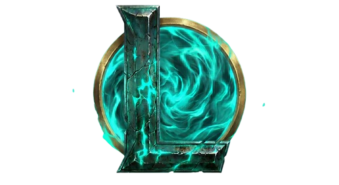
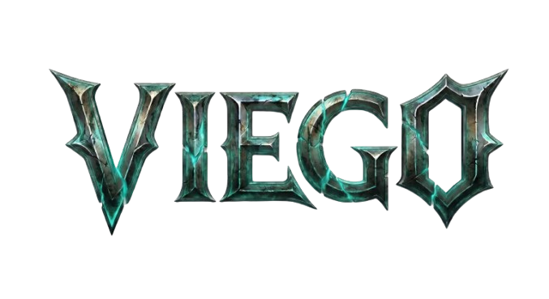
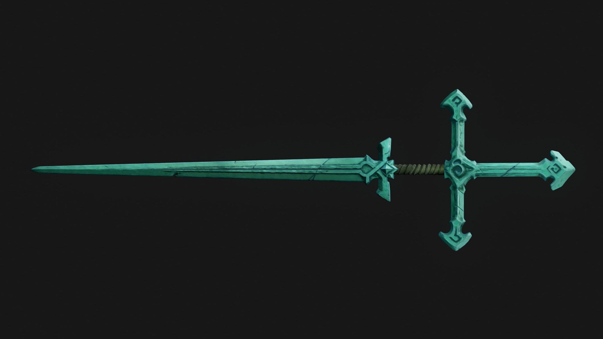
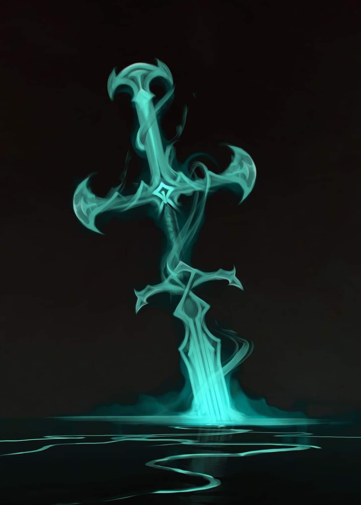
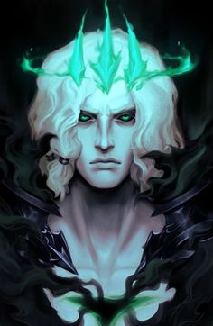
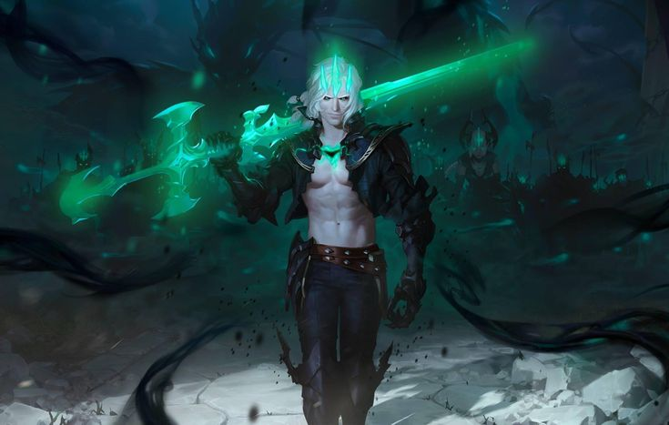
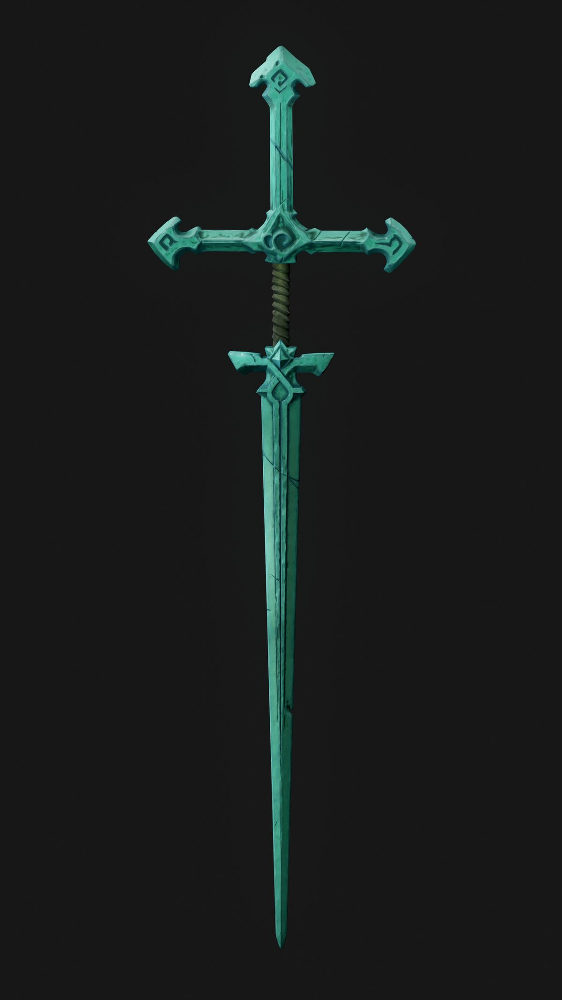

I
Memória I
A PROMESSA A ISOLDE
Antes da coroa ruir, havia uma rainha, uma promessa e um amor que Viego se recusou a perder.



O Rei Destruído
Nenhum preço é alto demais pela rainha.
Consumido por uma coroa partida e por uma saudade impossível, Viego retorna das Ilhas das Sombras em busca daquilo que perdeu.
FRAGMENTOS DA RUÍNA
Antes da coroa ruir, havia uma rainha, uma promessa e um amor que Viego se recusou a perder.
A dor deixou de ser luto e se tornou vontade. Das Ilhas das Sombras, a ruína começou a caminhar.
O que era saudade virou maldição, e cada alma tocada pela névoa passou a carregar um pedaço da ruína.


Santidade era mais do que uma arma; era o símbolo máximo de soberania dos antigos governantes de Camavor. Nas mãos de Viego, porém, o propósito do aço foi corrompido antes mesmo do fim.
A Corrupção Nas Águas BenditasQuando o gume perfurou o coração de Isolde nas profundezas das Ilhas Abençoadas, a magia ancestral reagiu com a dor do monarca e espalhou a Névoa Negra pelo mundo.
A Lâmina Do Rei


